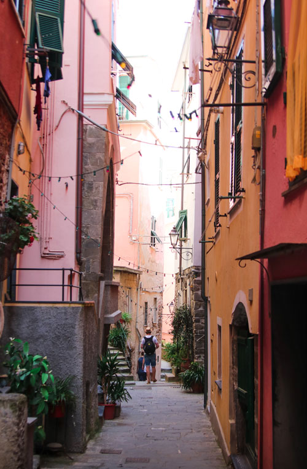
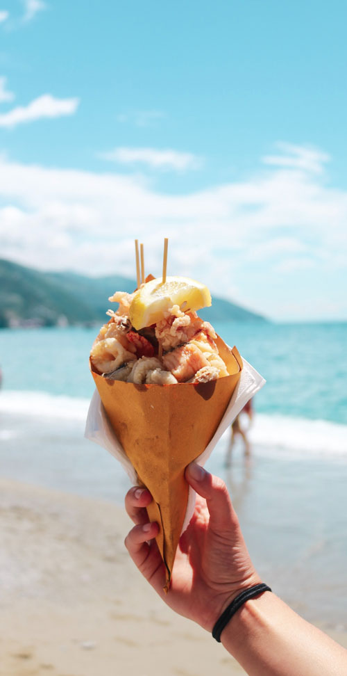
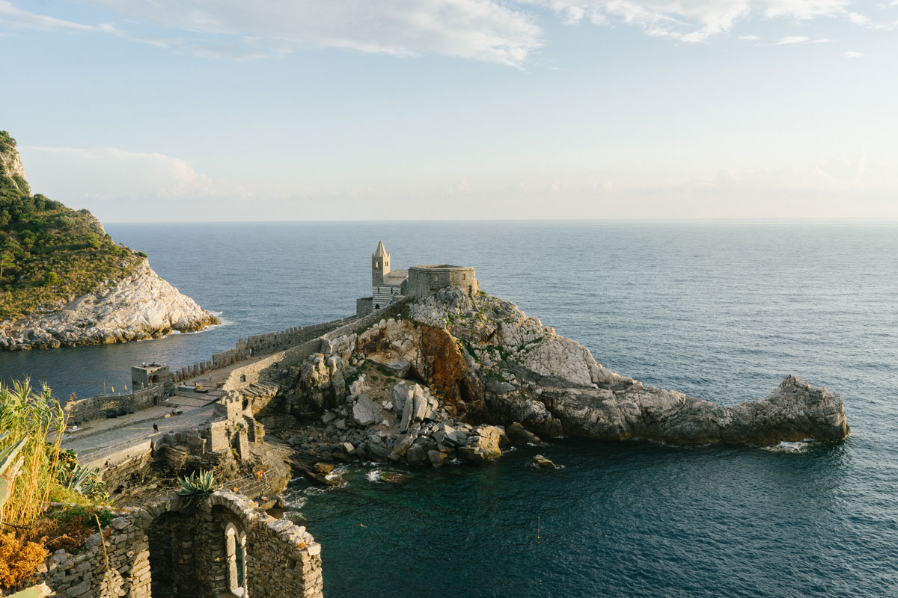
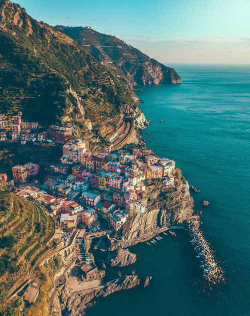
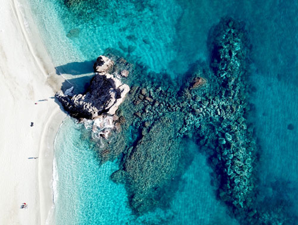
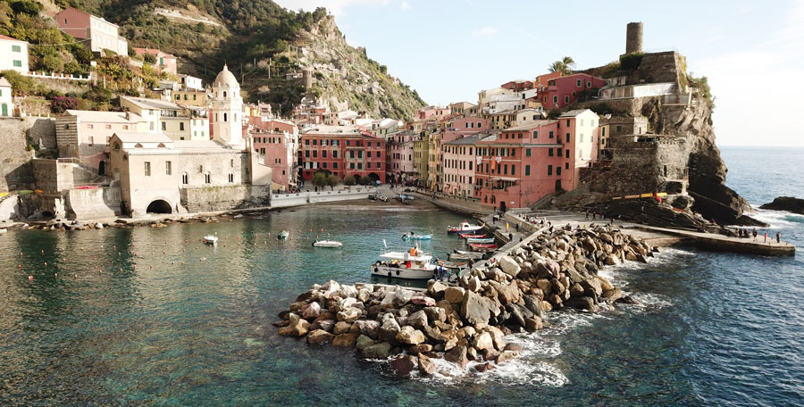

Home
Patrimonio
Descrizione
L'Italia
Scheda Tecnica
Meraviglie
Gallery
Gallery
Le img più belle di questo angolo di paradiso
 

 

Aggiungi le tue fotografie!
Hai visitato questi luoghi meravigliosi e hai qualche ricordo che vorresti condividere? Inviaci i tuoi scatti migliori e diventa tu il protagonista!
Invia ora